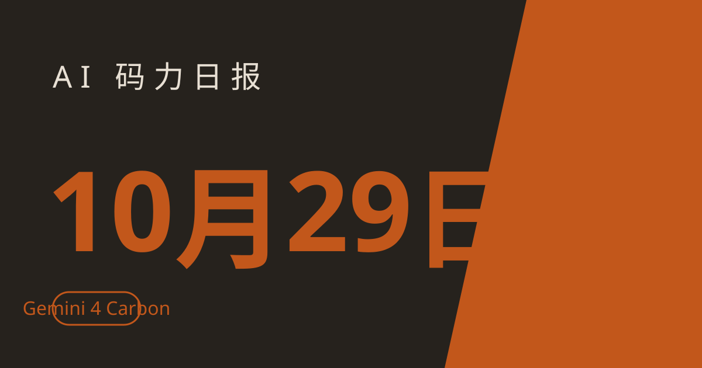

AI 码力日报 · 2026年10月29日

⚡ 一句话速览
- Google Gemini 4 Carbon 发布：10 月 28 日上线的安全与长程编码模型，独立评测综合指数 59 分登顶，漏洞挖掘、利用与补丁三项官方跑分全线亮眼，但先只给 Fairwind 计划的安全防守方用。
- OpenAI 密集进企业软件：10 月 27 日联手 Oracle、10 月 28 日再联手 ServiceNow，ChatGPT 与 Codex 直接接进企业应用、数据库与工单系统，权限仍走客户自己的审批链。
- Anthropic 给律师上了现成工具箱：Claude for Legal 10 月 28 日新增 19 个开箱即用的法律 artifacts，引用核查、合同比对、法规追踪都能先跑一遍再让人签字。
- VS Code 1.144 的 Copilot Fusion 正式上线：不用再手动挑模型，Fusion 按任务自动选模型与 effort 档，付费档 11 月 30 日前打 7 折。
🤖 今日 AI Coding 动态
Google Gemini 4 Carbon：安全赛道的新王，但第一批只给防守方
跟你有啥关系：写代码最怕的不是写不出来，是写出带洞的代码还浑然不觉——Carbon 就是冲着这个痛点来的，而且它在第三方评测里直接登顶了。Google 10 月 28 日发布 Gemini 4 Carbon，定位是安全与长程工程任务最强的一档，距 Gemini 4 Argon 全面铺开仅两周。定价与 Argon 相同：输入每百万 token 2 美元、输出 10 美元。先泼一盆冷水：它目前只先开放给 Fairwind 计划里的一部分网络安全防守方，普通开发者还得等，看到跑分先别急着排接入计划。
跑分我按官方与第三方分开列，免得混在一起没法比（截至撰写时）：
| 评测 | Carbon | 主要对手 |
|---|---|---|
| Artificial Analysis 综合指数 v5.0 | 59（第 1） | Claude Opus 5.5：58；GPT-6 Astra：57；Argon：50 |
| Artificial Analysis 编码 Agent 指数 | 59 | Claude Code + Opus 5.5：约 62（领先 Carbon 3 分） |
| SEC-bench Pro（找漏洞，Google 官方） | 88.2% | — |
| ExploitGym（利用，Google 官方） | 54.8% | — |
| CWE-bench（打补丁，Google 官方） | 71.0% | — |
| FrontierSWE 2（Google 官方） | 61.2% | GPT-6 Astra：65.5%，仍领先 |
| OSWorld-2.1（Google 官方） | 81.5% | Claude Opus 5.5：87.2%，仍领先 |
我的判断：Carbon 的叙事很清晰——不在全能榜上硬拼，而是在"代码安不安全"这个开发者每天都在付账的维度上做第一。安全代码生成成功率号称是 Argon 的两倍以上，这对要过合规审计的团队是真金白银；但 FrontierSWE 2 与 OSWorld 两项仍落后，说明它还不是"一个模型包打天下"的答案，等开放后先拿它跑漏洞扫描与补丁评审这两类任务，通用编码仍建议留一个对照组。原文链接
OpenAI 两天连签 Oracle 与 ServiceNow：ChatGPT 与 Codex 直接住进企业软件里
跟你有啥关系：如果你公司的业务跑在 Oracle 或 ServiceNow 上，AI 助手不再是"旁边开个聊天窗口"，而是能直接在业务系统里查数、办事、写代码了。Oracle 在 10 月 27 日的 AI World 大会上宣布与 OpenAI 深化合作，推出四款产品：Oracle AI Workspace（把 Fusion 应用、NetSuite、AI 数据库与 OCI 整进一个 ChatGPT 可达的入口）、Oracle App Composer（用 Codex 等编码工具基于已授权的企业数据建应用）、Oracle AI Security Mesh（探查系统漏洞）与面向中小企业的 AI SMB Bundle。注意：OpenAI 自己也说明 Workspace 仍在开发中，不是今天就能全量用的成品。10 月 28 日，OpenAI 又与 ServiceNow 扩大合作：ServiceNow 的 MCP 插件即日起可在市场下载，员工能在对话里查相似工单、评估变更风险、更新记录，ServiceNow 的 Action Fabric 会套用客户已有的业务规则与权限——能动什么，取决于你自己的配置，不是 AI 说了算；更多安全、语音与开发能力计划在 2026 年底前陆续上线，ServiceNow 还计划给全体员工开通 ChatGPT Work 与 Codex。另据 The Information 报道，OpenAI 还计划采购 Google 的 TPU 芯片，此事双方均未置评，算作传闻先记一笔。我的判断：这两单的共同点是"权限不让步"——企业敢把 AI 放进核心系统，前提是审批链、访问控制原样保留；对开发者来说，下一波活儿很可能是给这些入口写插件与审批规则，而不是再写一个聊天机器人。原文链接
Anthropic 的 Claude 法律工具箱：19 个 artifacts，律师先验货再签字
跟你有啥关系：法律团队用 Claude 最烦的两件事——每次从零搭流程、每次人工逐条核对引用——这次 Anthropic 直接给了现成的。Anthropic 10 月 28 日为 Claude for Legal 推出 artifacts 画廊：在 5 月上线的法律产品基础上新增 6 个自研任务 artifacts、4 个法律科技公司与律所 built 的 artifacts、9 个法律援助类 artifacts，每个都先带示例，接入自己的文档再跑。点名几个实用的：Cite check（拿法律文件与原文逐条比对，揪出引错的页码、不成立的主张）、Jurisdiction survey matrix（跨法域法规对比）、Matter board（把委托函、邮件、表格变成待办事项板）、Playbook deviation board（合同与公司标准条款比对、异常自动走审批）、Regulatory horizon scan（upcoming 法规按时间线排影响）、Tabular review（从一堆合同里抽表、每格都链回原文）。同时法律连接器已超过 60 个，包括 Bloomberg Law、Filevine、Legora 等，团队内外的共享也做了合规隔离。我的判断：这套东西的卖点不是"AI 替律师写"，而是"AI 先跑第一遍、每句话都链回原文、律师只做判断"——对任何要出正式文件的团队，这个顺序都值得抄：先让模型把证据链摆出来，你再签字。原文链接
VS Code 1.144：Copilot Fusion 正式上线，选模型这件事以后不用你操心了
跟你有啥关系：每天在几个模型之间来回切换、纠结"这个任务该用谁"，Fusion 就是来收这个税的。微软 10 月 28 日发布 VS Code 1.144，GitHub Copilot Fusion 正式可用：它把多模型编排与任务感知选模型合在一起，你只选 Standard、High、Max 三档 effort，Fusion 按任务难度决定用一个还是多个模型、分别生成、评审、互评，账单按实际调用的每个模型标准价算。付费档（Pro+、Max、Business、Enterprise 可用 High 与 Max）在 2026 年 11 月 30 日前享 7 折。同日微软还把 Copilot harness（Copilot 背后的编排层）通过 Microsoft Foundry 开放给开发者与企业客户，支持 20 多个前沿模型与自带 key，走 MCP、agent skills 与插件等开放标准。第三方数据也值得看一眼：Fusion Max 在 Artificial Analysis 编码 Agent 指数上拿到 60 分，距 Claude Code + Opus 5.5 的档位只差约 2 分，而 GitHub 称平均 API 成本约只有一半。我的判断：模型选型正在从"开发者决策"变成"平台设置"——以后比拼的不是你会不会挑模型，而是你会不会定 effort 档与验收标准；先从 Standard 起步，复杂重构再开 High，别一上来就 Max 烧钱。原文链接
安全警报：Aokigahara 木马专偷 AI 编程工具的登录态，你的 API key 可能就在它的购物单上
跟你有啥关系：这不是"别人中招"的新闻——它偷的正是你每天在用的 Claude、ChatGPT Desktop、Codex、Cursor、Windsurf、GitHub Copilot、Gemini CLI 的认证文件与会话数据。Check Point 10 月 27 日披露的 Windows 信息窃取木马 Aokigahara，除了常规的浏览器、VPN、加密钱包、FTP/SFTP、密码管理器、邮件客户端，还专门搜刮上述 AI 工具的认证、会话与配置文件，以及 Git 数据、SSH 私钥、API key 与 AWS、Azure、Google Cloud 的配置；得手后先查自己是不是跑在虚拟机或沙箱里，再打包加密发往攻击者服务器。更麻烦的是连锁反应：一个有效的 Copilot 或 Claude 会话，能顺带打开私有仓库与云资源。我的判断：今晚就做三件事——所有 AI 编程工具的会话能吊销的重登一遍、API key 轮换一次并收进密钥管理器、开发机上别再明文躺着云厂商的凭证文件；下面教程里我把自查步骤拆成了可复制的清单。原文链接
📱 AI 应用新品
Google 的 Gemini 政务服务：先帮市政府清积压，拍板权仍留给公务员
是什么：Google 10 月 28 日推出的 Gemini for government services，一个面向地方政府的 AI 平台，帮公务员处理最耗时的行政活：审居民申请、评采购标、找缺失材料。目前处于预览阶段，早期采用者包括密苏里州与美国卫生与公众服务部。解决什么问题：市政积压的根子往往不是"不会判"，而是"材料翻不完"——它能独立核对居民提交的文件、发现缺签名或不一致、拿供应商提案逐条对采购要求、起草评分理由，但福利资格、合同授予、法律事项等最终决定仍必须由公务员做。免费额度/价格：面向政府客户的预览产品，未公布个人价格，普通读者用不上。适合谁：做政务数字化、公共服务流程优化的人；普通读者看个方向也行——"AI 干杂活、人做决定"这个分工，正在从口号变成产品形态。原文链接
🐑 今日羊毛
Copilot Fusion 7 折：付费档 11 月 30 日前薅，复杂任务再开高档
一句话：VS Code 1.144 随 Copilot Fusion 正式上线送上的折扣，付费档 Fusion 用量 7 折，11 月 30 日截止。
- 怎么薅：升级到 VS Code 1.144，在 Copilot 里打开 Fusion，选 Standard 起步、复杂任务再开 High/Max，折扣自动计入 Fusion 用量账单。直达链接
- 有效期：2026 年 11 月 30 日前（截至撰写时），High 与 Max 档需 Pro+、Max、Business 或 Enterprise 计划
- 适合谁：已经在付费 Copilot 档位上、每天要处理多模型任务的开发者；免费档用户先看，不用为折扣升级
Anthropic 政府采购 6 折：美国各级政府买 Claude Enterprise 与 API 直接省 40%
一句话：Anthropic 与美国总务管理局的 OneGov 协议扩展到州、地方、部落与领地政府，Claude Enterprise、Claude for Government 与 API 一律 6 折，官方估算总计省约 10 亿美元。
- 怎么薅：走 OneGov 采购通道下单，适用范围以协议条款为准，个人用户用不上，别硬凑。直达链接
- 有效期：协议期内有效（截至撰写时），以 Anthropic 与 GSA 公布的条款为准
- 适合谁：美国各级政府机构的采购与 IT 负责人；国内读者看个价目参考——政府大单的折扣力度，正在成为各家抢企业市场的常规武器
Google for Startups AI 档：AI 初创最高 35 万美元云额度，Gemini 与 Gemma 都能用
一句话：面向 AI 初创的 Google 云额度计划，最高 35 万美元、分两年给，覆盖 Gemini 与 Gemma，10 月 28 日刚核验过条款仍在开放申请。
- 怎么薅：在 Google for Startups 官网提交申请，需符合 AI 优先、近 5 年内成立、获风投支持等条件，获批后按官方条款使用额度。直达链接
- 有效期：长期计划（截至撰写时），额度分两年发放，具体以申请页条款为准
- 适合谁：做 AI 产品、有融资背景的初创团队；个人开发者别指望，条件卡得严，不如先走各家的免费档
⭐ 今日 GitHub 热门项目
Nutlope/hallmark：给 coding agent 立一套"别长得像 AI 生成的"审美规矩
一句话介绍。解决什么问题：AI 生成的页面总有股味儿——每个标题上都顶个 eyebrow、结尾必跟一个注册表单、配色与留白千篇一律；hallmark 是给 Claude Code、Codex、Cursor 与 OpenCode 用的设计 skill，从 48 种材质的目录里发三套主题，再用真实浏览器按"机器生成痕迹"逐项 lint，最后由一个全新上下文的评审员拍板。⭐ 约 40k star、近 7 天新增约 9.2k（截至撰写时）。适合：天天让 agent 出落地页、官网、营销页的人；先把它接进 agent，再看一眼它拦下来的页面——你会发现自己以前对"AI 味儿"有多迟钝。项目地址
nightly-labs/openbot：本地优先的 AI 队友工作台，Codex、Claude、Grok 各有各的工位
一句话介绍。解决什么问题：多 agent 并行时最乱的是上下文串台、任务排队、文件来回传；openbot 是一个本地优先的桌面工作台，给 Codex、Claude、Grok 各配独立工作区、任务队列、文件共享、浏览器控制与 agent 间协作，不用把所有活儿都堆进一个聊天窗口。⭐ 当日新增约 794 star（截至撰写时），新项目势头正猛。适合：同时跑多个 coding agent、想在本地把任务分工管起来的人；本地优先意味着数据先留在自己机器上，但多 agent 的权限边界仍要自己先划清。项目地址
makecindy/cindy：开箱即用的开源 AI agent，口号就是"想到，就能做到"
一句话介绍。解决什么问题：很多 agent 框架装完还要配半天才跑得起来；cindy 主打开箱即用，中英双语介绍，装好就能直接干活。⭐ 约 7.3k star、当日新增约 1.4k（截至撰写时）。适合：想快速验证"一个通用 agent 能不能替我跑通一整件事"的人；新项目先在小任务上试，别一上来就把生产账号交出去。项目地址
🤗 Hugging Face 热门模型
Qwen 正在成为开源世界的"默认底座"：新微调模型里 51% 都出自它
是什么：10 月底的一份全量统计——拉取了 Hugging Face 上 2026 年 1 月以来上传的 277,029 个文本生成模型并追踪各自的底座——显示 2026 年 10 月新发布的衍生模型里 57.8% 基于中国底座，其中阿里 Qwen 一家就占 51.0%；Meta 的 Llama 则从 31.7% 跌到 11.2%。能干嘛：本地跑还是 API 调——如果你要选一个"生态最大、微调与工具链最全"的开源底座起手，指南里推荐的起点是 Qwen3.8-27B（Apache 2.0），27B 的体量适合 API 调用或多卡部署，个人单卡先走量化档验证；过去 30 天下载量最高的 1000 个文本生成模型合计 4.133 亿次下载里，Qwen 系占了 50.0%。适合：要选开源底座做微调、RAG 或 agent 原型的人；底座选型先看生态与工具链，别只看单项跑分，Qwen 现在的生态厚度本身就是一种生产力。相关报道
🛠️ 值得一试的工具：Cursor Agent SDK
是什么：Cursor 10 月 20 日正式上线的 Agent SDK，核心理念是"把 agent 写成代码"：一个 agent 就是一个文件夹——提示词是一份 instructions.md，每个工具是一个类型化的文件，skills 按需加载，MCP 连接单独成目录；关键是它自带 eval：给 agent 发一条固定消息，断言它调用了哪些工具、传了什么参数、回了什么形状的结果，跑通才算过关，每次对话还留全量消息与工具调用记录。解决什么痛点：agent 最难的从来不是第一次演示，而是提示词改了一版之后、它还靠不靠谱——以前提示词躺在设置框里没历史，现在改提示就是一次 diff、同事能评审、CI 能拦。免费额度：随 Cursor 产品走，具体以官方定价为准，SDK 本身是开发方式的改变，不是单独售卖的服务。
** verdict：** 值得试——理由就一句：先给"最怕它乱来的那个动作"写一条 eval（比如收到无关消息时绝不能发邮件、改记录），这条测试一立，你对 agent 的信任就从"感觉"变成了"证据"。原文链接
🎓 3 分钟小教程：对照 Aokigahara 的偷法，给你的开发机做一次凭证自查
前置条件：一台装了 AI 编程工具（Claude Code、Codex、Cursor、Copilot、Gemini CLI 任一）的开发机，10 分钟，有权轮换自己的 key。
- 盘点：在终端列出你装过的 agent、插件与 MCP 服务器，含版本与安装来源——不知道装了什么，就谈不上防住什么。
- 收密钥：把散落在
.env、配置文件、聊天记录里的 API key、云凭证收进密钥管理器，轮换一遍已暴露过的 key；AI 工具的会话能重登的全部重登一次。 - 关自动放行：在敏感仓库里关掉 agent 的 auto-approve，涉及发邮件、改记录、删文件、付款的操作一律改成人工确认。
- 划权限：给 agent 只开当前任务必需的仓库与目录，MCP 服务器固定版本、只用可信来源，rules 与 agent 配置文件当代码一样走评审。
- 留日志：打开工具调用日志（哪个 agent、哪个开发者、调了什么、拦了什么），每周扫一眼异常项。
预期效果：做完这 5 步，Aokigahara 这类专偷 AI 工具会话的木马即使进了机器，能偷到的也是已轮换、已收口的旧凭证；更重要的是，你第一次对"我的 agent 能碰什么"有了一张清单，而不是凭感觉。
数据截至撰写时，仅供参考。